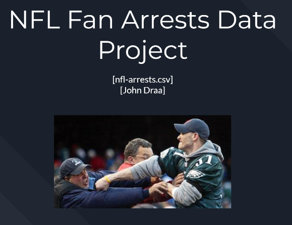

Software Developer
I am an aspiring software developer with experience building applications across backend systems, user interfaces, and data-driven workflows. I work primarily with Java and Python and have experience developing user-facing applications using HTML, CSS, and JavaScript, along with working with SQL databases for data storage and retrieval. Through coursework and collaborative development environments, I have developed strong foundations in object-oriented programming, data structures, and the Software Development Life Cycle, with an emphasis on writing maintainable code and working effectively in teams. I enjoy solving practical technical problems and continue expanding my skills as I work toward a professional career in software development.
Crypt of the Cubes is a multiplayer roguelike survival game developed as part of a team software engineering project. The game supports up to four players in real-time matches where players survive waves of enemies, collect upgrades, and progress through increasingly difficult levels. I served as the primary backend developer, designing and implementing the Java Spring Boot server responsible for player accounts, match management, character progression, and real-time communication between clients. The system uses REST APIs and WebSockets to maintain server-authoritative gameplay, ensuring synchronized multiplayer sessions and persistent player progression across matches.
This project analyzes historical NFL game data to predict arrest risk levels at games based on factors such as rivalry matchups, score differences, and game outcomes. Using Python and machine learning libraries including scikit-learn and XGBoost, I performed data cleaning, exploratory analysis, feature engineering, and model training to classify games into low, medium, or high arrest risk categories. Multiple models were compared using cross-validation and hyperparameter tuning, with a tuned XGBoost model achieving the best performance. The project demonstrates practical application of data science workflows to extract insights and build predictive models from real-world event data.